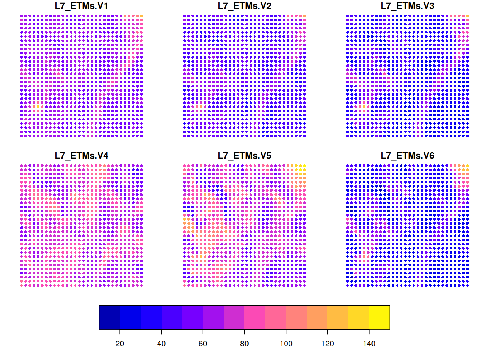
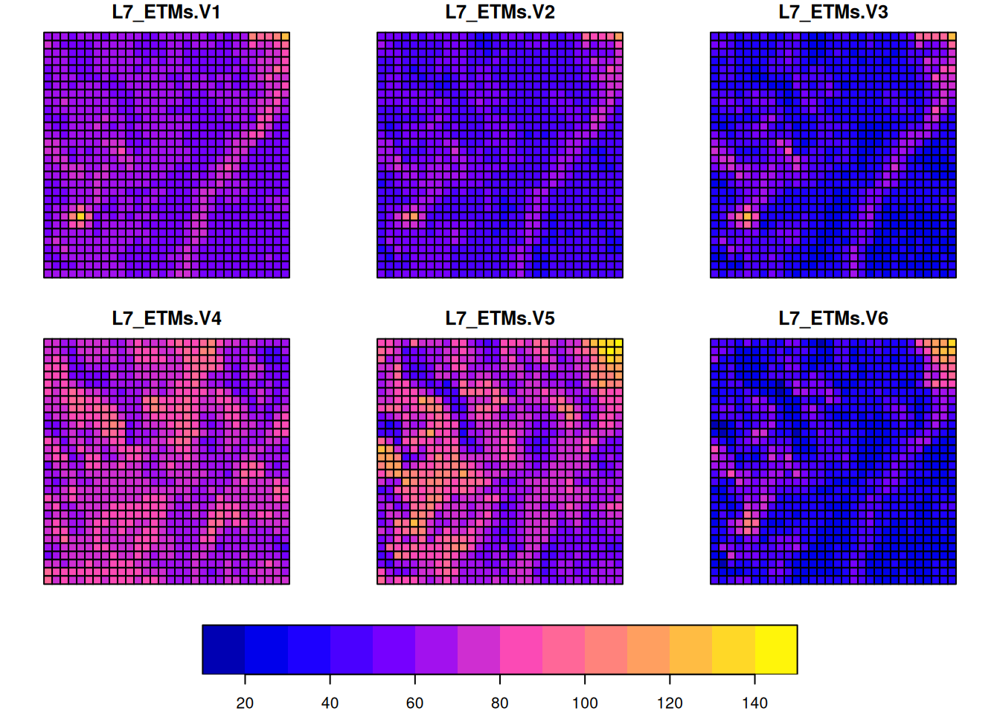
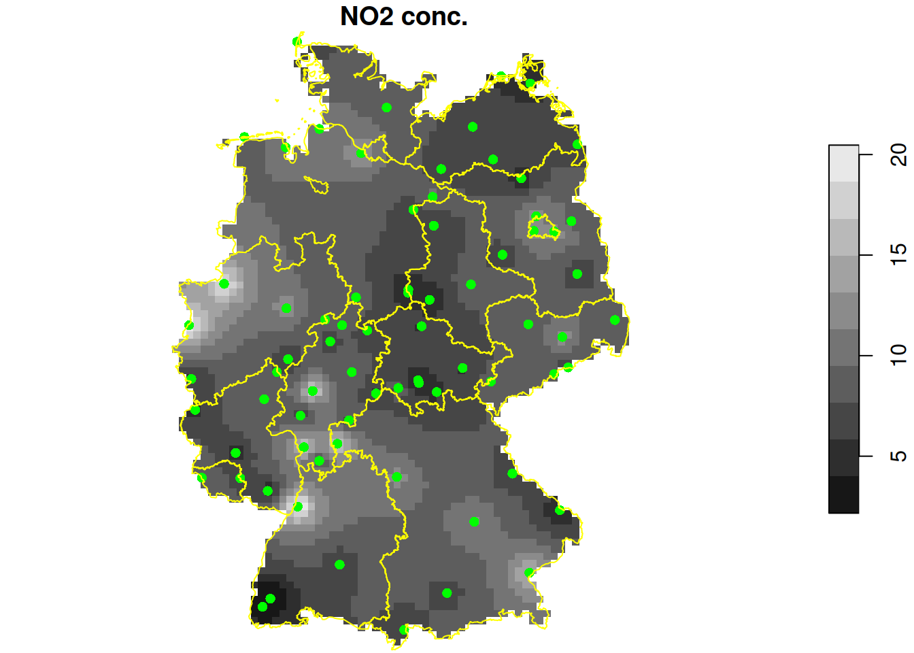
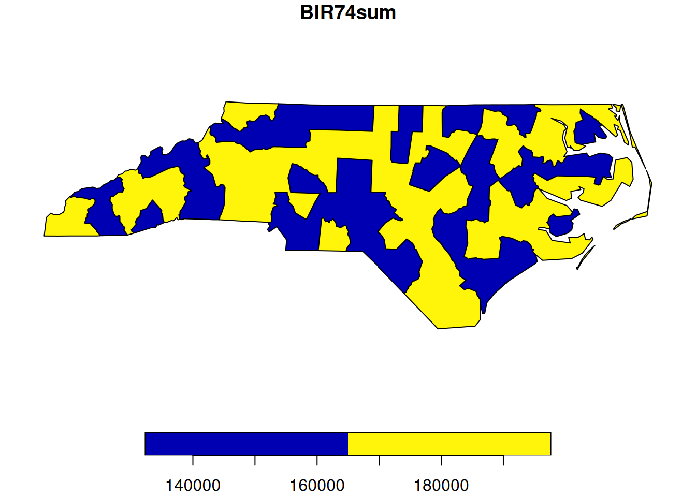

2 Operations, raster-vector, vector-raster
2.1 Learning goals
In many practical geospatial data science cases, the researcher is faced with combining different datasets that multiple include datasets
- of raster and vector type,
- with different spatial coordinate systems
- with different time reference
- with different spatial and/or temporal resolutions
A common approach is to first work all datasets towards a common reference system, type, and resolution, and then combine them. What the “best” common resolution is depends on the goals of the study. Today we will look at methods and tools to do so.
Summary
- Upstream libraries
- Operatios on vector data and on raster data
- Vector-raster and raster-vector conversions
- Up- and downsampling, area-weighted interpolation
2.2 The upstream libraries
The main libraries: GDAL, PROJ and GEOS are found in all spatial data science software stacks. See here for R; for R and Python below:
2.3 geometry measures, predicates, and transformers
measaures
Geometry measures include
- unary measures: area, length, dimension
- binary measures: distance (and relate, which gives the DE9-IM pattern)
predicates
Predicates include those in this table.
transformers
See unary and binary and n-ary for a full list.
library(sf)
# Linking to GEOS 3.12.1, GDAL 3.8.4, PROJ 9.4.0; sf_use_s2() is TRUE
pt = st_point(c(0,0))
b = st_buffer(pt, 1)
plot(b)
plot(pt, add = TRUE, cex = 3, col = 'red', pch = 3)
pt2 = st_point(c(1.5, 0))
b1 = st_buffer(pt, 1)
b2 = st_buffer(pt2, 1)
par(mfrow = c(2, 2), mar = c(0,0,1,0))
plot(c(b1, b2), main = 'union')
plot(st_union(b1, b2), col = 'lightgrey', add = TRUE)
plot(c(b1, b2), add = TRUE)
plot(c(b1, b2), main = 'intersection')
plot(st_intersection(b1, b2), col = 'lightgrey', add = TRUE)
plot(c(b1, b2), add = TRUE)
plot(c(b1, b2), main = 'difference')
plot(st_difference(b1, b2), col = 'lightgrey', add = TRUE)
plot(c(b1, b2), add = TRUE)
plot(c(b1, b2), main = 'sym_difference')
plot(st_sym_difference(b1, b2), col = 'lightgrey', add = TRUE)
plot(c(b1, b2), add = TRUE)
2.4 spherical geometry
All software using GEOS (Python, PostGIS, QGIS) computes geometrical operations on geodetic (long/lat) coordinates in \(R^2\) - in a flat, Cartesian coordinate system. Python’s geopandas warns if it does, but does it nevertheless. In R’s sf we can mimic this by setting sf_use_s2(FALSE).
old = sf_use_s2(FALSE)
# Spherical geometry (s2) switched off
p1 = st_sfc(st_point(c(0, 0)), crs = 'OGC:CRS84')
p2 = st_sfc(st_point(c(0,40)), crs = 'OGC:CRS84')
b1 = st_buffer(p1, 10)
# Warning in st_buffer.sfc(p1, 10): st_buffer does not correctly
# buffer longitude/latitude data
# dist is assumed to be in decimal degrees (arc_degrees).
b1 |> st_area() |> units::set_units(km^2)
# 3850972 [km^2]
b2 = st_buffer(p2, 10)
# Warning in st_buffer.sfc(p2, 10): st_buffer does not correctly
# buffer longitude/latitude data
# dist is assumed to be in decimal degrees (arc_degrees).
b2 |> st_area() |> units::set_units(km^2)
# 2965892 [km^2]
sf_use_s2(old) # restore
# Spherical geometry (s2) switched onBoth buffers “look” good in plate carree:
library(sf)
library(rnaturalearth)
par(mar = c(2,2,0,0) + .1)
ne_countries() |> st_geometry() |> plot(axes=TRUE)
plot(b1, add = TRUE, border = 'red')
plot(b2, add = TRUE, border = 'red')
but not on a plot with proper aspect ratio:
plot(b2)
ne_countries() |> st_geometry() |> plot(axes=TRUE, add=TRUE)
2.5 raster-vector: polygonizing, extracting
Rasters can be converted to vector data, either cell-by-cell or groupwise. Cell-by-cell one could convert to either points or polygons:
library(stars)
# Loading required package: abind
L7 = st_as_stars(L7_ETMs)
L7[,1:30,1:30] |> st_as_sf(as_points = TRUE) |> plot(cex = .75, pch = 16)

If we have categorical variables in a raster map, such as land use, we can create contiguous polygons from areas having a constant value:
lc = read_stars(system.file("tif/lc.tif", package = "stars"))
plot(lc, key.pos = 4, key.width = lcm(7))
pal = attr(lc[[1]], "colors")
st_as_sf(lc, merge = TRUE) |> plot(key.pos = 4, pal = pal, key.width = lcm(7))
Raster values can be extracted at arbitrary point locations:
set.seed(131) # to make this reproducible
pts.L7 = st_sample(st_bbox(L7), 3)
st_extract(L7, pts.L7) # two-dimensional array: 3 points x 6 bands
# stars object with 2 dimensions and 1 attribute
# attribute(s):
# Min. 1st Qu. Median Mean 3rd Qu. Max.
# L7_ETMs 26 48 61 62.7 72.8 121
# dimension(s):
# from to refsys point
# geometry 1 3 SIRGAS 2000 / ... TRUE
# band 1 6 NA NA
# values
# geometry POINT (290830 ...,...,POINT (291693 ...
# band NULL
st_extract(L7, pts.L7) |> st_as_sf() # "wide": bands spread over columns
# Simple feature collection with 3 features and 6 fields
# Geometry type: POINT
# Dimension: XY
# Bounding box: xmin: 290000 ymin: 9110000 xmax: 292000 ymax: 9120000
# Projected CRS: SIRGAS 2000 / UTM zone 25S
# L7_ETMs.V1 L7_ETMs.V2 L7_ETMs.V3 L7_ETMs.V4 L7_ETMs.V5 L7_ETMs.V6
# 1 80 66 71 59 121 94
# 2 58 41 29 76 56 26
# 3 63 51 45 72 73 47
# geometry
# 1 POINT (290830 9114499)
# 2 POINT (290019 9119219)
# 3 POINT (291693 9116038)
st_extract(L7, pts.L7) |> st_as_sf(long = TRUE) # "long form": cycles geometries
# Simple feature collection with 18 features and 2 fields
# Geometry type: POINT
# Dimension: XY
# Bounding box: xmin: 290000 ymin: 9110000 xmax: 292000 ymax: 9120000
# Projected CRS: SIRGAS 2000 / UTM zone 25S
# First 10 features:
# band L7_ETMs geometry
# 1 1 80 POINT (290830 9114499)
# 2 1 58 POINT (290019 9119219)
# 3 1 63 POINT (291693 9116038)
# 4 2 66 POINT (290830 9114499)
# 5 2 41 POINT (290019 9119219)
# 6 2 51 POINT (291693 9116038)
# 7 3 71 POINT (290830 9114499)
# 8 3 29 POINT (290019 9119219)
# 9 3 45 POINT (291693 9116038)
# 10 4 59 POINT (290830 9114499)
pts.lc = st_sample(st_bbox(lc), 7)
st_extract(lc, pts.lc) |> na.omit() # one-dimensional: returns an `sf` object by default
# Simple feature collection with 4 features and 1 field
# Geometry type: POINT
# Dimension: XY
# Bounding box: xmin: 3150000 ymin: -38300 xmax: 3220000 ymax: 16200
# Projected CRS: Albers Conical Equal Area
# lc.tif geometry
# 1 Cultivated Crops POINT (3223109 -34971)
# 2 Evergreen Forest POINT (3152354 -6395)
# 3 Developed, Medium Intensity POINT (3174647 -38344)
# 5 Herbaceuous POINT (3197310 16231)2.6 vector-raster: rasterize, interpolate, density
rasterize

plot(st_as_stars(de.sf["HASC_1.f"])) # vector data cube
template = st_as_stars(st_bbox(de.sf), dx = 0.1) # .1 x .1 degree cells
de.r = st_rasterize(de.sf["HASC_1.f"], template)
plot(de.r)
st_rasterize() calls the GDAL utility gdal_rasterize (through the C API, not as as system call). Its command line options are found here. E.g.,
de.r$at = st_rasterize(de.sf["HASC_1.f"], template, options = "ALL_TOUCHED=TRUE")
de.r
# stars object with 2 dimensions and 2 attributes
# attribute(s):
# HASC_1.f at
# DE.BY : 868 DE.BY : 929
# DE.NI : 639 DE.NI : 648
# DE.NW : 446 DE.NW : 499
# DE.BW : 441 DE.BW : 421
# DE.BR : 393 DE.MV : 380
# DE.MV : 305 DE.BR : 360
# (Other):1497 (Other):1705
# dimension(s):
# from to offset delta refsys point x/y
# x 1 92 5.87 0.1 WGS 84 FALSE [x]
# y 1 78 55.1 -0.1 WGS 84 FALSE [y]
as.vector(de.r$at) |> length() # nr of non-missing values
# [1] 4942
as.vector(de.r$HASC_1.f) |> length()
# [1] 4589See ?gdal_utils for help on other GDAL utilities available through the C API.
Interpolate and density
Interpolating measured values, or estimating densities of points are two common methods to move from point data to continuous rasters. We will use the NO2 dataset over Germany, and work in a sensible coordinate reference system (UTM zone 32N):
Interpolation (inverse distance):
no2 <- read.csv(system.file("external/no2.csv", package = "gstat"))
crs <- st_crs("EPSG:32632")
st_as_sf(no2, crs = "OGC:CRS84", coords =
c("station_longitude_deg", "station_latitude_deg")) |>
st_transform(crs) -> no2.sf
library(ggplot2)
# plot(st_geometry(no2.sf))
de.sf |> st_transform(crs) -> de
template = st_as_stars(st_bbox(de), dx = units::set_units(10, km)) # 10 km x 10 km
de.r_utm = st_rasterize(de["HASC_1.f"], template)
library(gstat)
no2.r = gstat::idw(NO2~1, no2.sf, de.r_utm)
# [inverse distance weighted interpolation]
plot(no2.r["var1.pred"], reset = FALSE, breaks = "equal", main = "NO2 conc.")
st_geometry(no2.sf) |> plot(add = TRUE, col = 'green', pch = 16)
st_geometry(de) |> plot(add = TRUE, border = "yellow")
Point densities:
library(spatstat)
# Loading required package: spatstat.data
# Loading required package: spatstat.univar
# spatstat.univar 3.1-1
# Loading required package: spatstat.geom
# spatstat.geom 3.3-4
# Loading required package: spatstat.random
# spatstat.random 3.3-2
# Loading required package: spatstat.explore
# Loading required package: nlme
# spatstat.explore 3.3-4
#
# Attaching package: 'spatstat.explore'
# The following object is masked from 'package:gstat':
#
# idw
# Loading required package: spatstat.model
# Loading required package: rpart
# spatstat.model 3.3-3
# Loading required package: spatstat.linnet
# spatstat.linnet 3.2-3
#
# spatstat 3.3-0
# For an introduction to spatstat, type 'beginner'
d = density(as.ppp(no2.sf["NO2"], as.owin(de))) |> st_as_stars()
plot(d, reset = FALSE, main = "station density")
st_geometry(no2.sf) |> plot(add = TRUE, col = 'green', pch = 16)
st_geometry(de) |> plot(add = TRUE, border = "yellow")
2.7 up- and down-scaling
Up- and downscaling means going from fine to course resolution (up), or from course to fine resolution (down). Upscaling is usually simple as it may simply involve grouping and summarising, downscaling is complicated as it may involve statistical modelling, sampling, simulation, quantifying and handling uncertainty.
aggregation: grouping features
library(sf)
demo(nc, ask = FALSE, echo = FALSE) # loads the nc dataset
library(dplyr)
#
# Attaching package: 'dplyr'
# The following object is masked from 'package:nlme':
#
# collapse
# The following objects are masked from 'package:stats':
#
# filter, lag
# The following objects are masked from 'package:base':
#
# intersect, setdiff, setequal, union
nc |> select("BIR74") |>
group_by(substr(nc$NAME, 1, 1) < 'M') |>
summarise(BIR74sum = sum(BIR74)) -> res
res
# Simple feature collection with 2 features and 2 fields
# Geometry type: MULTIPOLYGON
# Dimension: XY
# Bounding box: xmin: -84.3 ymin: 33.9 xmax: -75.5 ymax: 36.6
# Geodetic CRS: NAD27
# # A tibble: 2 × 3
# `substr(nc$NAME, 1, 1) < "M"` BIR74sum geom
# <lgl> <dbl> <MULTIPOLYGON [°]>
# 1 FALSE 148652 (((-78.7 35.5, -78.5 35.7,…
# 2 TRUE 181310 (((-77.8 35.4, -77.8 35.3,…
plot(res)
aggregation: spatial predicates
Package terra can aggregate raster data specifying the number of cells to group in each dimension:
library(terra)
# terra 1.8.5
#
# Attaching package: 'terra'
# The following objects are masked from 'package:spatstat.geom':
#
# area, delaunay, is.empty, rescale, rotate, shift,
# where.max, where.min
library(stars)
L7 = st_as_stars(L7_ETMs)
L7.t = rast(L7)
(at = aggregate(L7.t, c(10,20)))
# class : SpatRaster
# dimensions : 36, 18, 6 (nrow, ncol, nlyr)
# resolution : 570, 285 (x, y)
# extent : 288776, 299036, 9110501, 9120761 (xmin, xmax, ymin, ymax)
# coord. ref. : SIRGAS 2000 / UTM zone 25S (EPSG:31985)
# source(s) : memory
# names : band1, band2, band3, band4, band5, band6
# min values : 58.4, 42.7, 31.3, 11.8, 12.3, 11.4
# max values : 111.8, 97.9, 107.6, 84.7, 142.2, 113.9
plot(at)
Package stars takes a more general approach, and allows arbitrary (sf or stars) objects as aggregation predicates:
set.seed(1355) # make reproducible
bb = st_bbox(L7) |> st_as_sfc()
p = st_sample(bb, 200)
st_combine(p) |> st_voronoi() |> st_collection_extract("POLYGON") |> st_crop(bb) -> v
plot(v, col = NA, border = 'black')

sampling
As pointed out above, st_extract() (or terra::extract()) can be used to retrieve cell values at point locations; st_intersection() can be used to retrieve polygon (or line or point) values at a give set of point locations.
st_sample() can be used to create sample points, in addition to uniform random sampling (on \(R^2\), or the sphere, \(S^2\)) it can also be used for stratified random, regular or Fibonacci (quasi-regular on a sphere) sampling. Further strategies are provided (and interfaced) through package spatstat (e.g. spatially clustered, or with a functionally known varying intensity).
area-weighted interpolation, dasymetric mapping
st_bbox(L7) |> st_as_stars(nx = 10, ny = 10) -> p
aw = st_interpolate_aw(aa, p, extensive = FALSE)
# Warning in st_interpolate_aw.sf(st_as_sf(x), to, extensive, ...):
# st_interpolate_aw assumes attributes are constant or uniform over
# areas of x
plot(aw, key.pos = 1)
This preserves the area-weighted values:
downsampling
Area-weighted interpolation can also be used to estimate (or redistribute) values for arbitrarily smaller areas. This is however of fairly little use as constants are assigned inside larger source areas. To do better, high resolution proxies can be used to inform a higher resolution spatial pattern. E.g. to estimate population density at high resolution from administrative area summaries, high resolution land use or land cover data can be used (“dasymetric mapping”). In remote sensing, high resolution spatial low resolution temporal data (e.g. aerial photo’s) are used to downsample lower resolution high frequent data (e.g. from sattelites).
2.8 Exercises
- In the first
st_bufferexample above, how many quad segments should be used to get the difference between the buffer area and pi smaller than 0.0001? - Why are the circular buffers computed in the section on spherical geometry of unequal size? Why does it become \(100 \pi\) when removing the coordinate reference system, as in
b1 |> st_set_crs(NA) |> st_area()
# [1] 314
b2 |> st_set_crs(NA) |> st_area()
# [1] 314- From looking at the plate carree map of the world, from which geometries can you already tell that they will be not valid when considered on the sphere?
- Check whether this is the case using
st_is_valid(). Which geometries are not valid? Can you make them valid? - Try the area-weighted example above using
extensive = TRUE. What does this mean? Which quantity is preserved now?